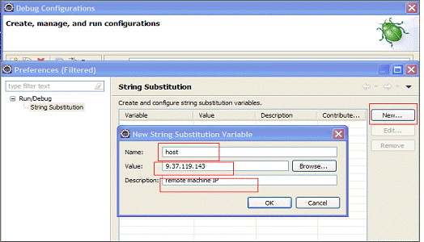

使用 pdb 进行调试
pdb 是 python 自带的一个包，为 python 程序提供了一种交互的源代码调试功能，主要特性包括设置断点、单步调试、进入函数调试、查看当前代码、查看栈片段、动态改变变量的值等。pdb 提供了一些常用的调试命令，详情见表 1。
表 1. pdb 常用命令
| 命令 | 解释 |
|---|---|
| break 或 b 设置断点 | 设置断点 |
| continue 或 c | 继续执行程序 |
| list 或 l | 查看当前行的代码段 |
| step 或 s | 进入函数 |
| return 或 r | 执行代码直到从当前函数返回 |
| exit 或 q | 中止并退出 |
| next 或 n | 执行下一行 |
| pp | 打印变量的值 |
| help | 帮助 |
下面结合具体的实例讲述如何使用 pdb 进行调试。
清单 1. 测试代码示例
import pdb a = "aaa" pdb.set_trace() b = "bbb" c = "ccc" final = a + b + c print final
开始调试：直接运行脚本，会停留在 pdb.set_trace() 处，选择 n+enter 可以执行当前的 statement。在第一次按下了 n+enter 之后可以直接按 enter 表示重复执行上一条 debug 命令。
清单 2. 利用 pdb 调试
[root@rcc-pok-idg-2255 ~]# python epdb1.py > /root/epdb1.py(4)?() -> b = "bbb" (Pdb) n > /root/epdb1.py(5)?() -> c = "ccc" (Pdb) > /root/epdb1.py(6)?() -> final = a + b + c (Pdb) list 1 import pdb 2 a = "aaa" 3 pdb.set_trace() 4 b = "bbb" 5 c = "ccc" 6 -> final = a + b + c 7 print final [EOF] (Pdb) [EOF] (Pdb) n > /root/epdb1.py(7)?() -> print final (Pdb)
退出 debug：使用 quit 或者 q 可以退出当前的 debug，但是 quit 会以一种非常粗鲁的方式退出程序，其结果是直接 crash。
清单 3. 退出 debug
[root@rcc-pok-idg-2255 ~]# python epdb1.py
> /root/epdb1.py(4)?()
-> b = "bbb"
(Pdb) n
> /root/epdb1.py(5)?()
-> c = "ccc"
(Pdb) q
Traceback (most recent call last):
File "epdb1.py", line 5, in ?
c = "ccc"
File "epdb1.py", line 5, in ?
c = "ccc"
File "/usr/lib64/python2.4/bdb.py", line 48, in trace_dispatch
return self.dispatch_line(frame)
File "/usr/lib64/python2.4/bdb.py", line 67, in dispatch_line
if self.quitting: raise BdbQuit
bdb.BdbQuit打印变量的值：如果需要在调试过程中打印变量的值，可以直接使用 p 加上变量名，但是需要注意的是打印仅仅在当前的 statement 已经被执行了之后才能看到具体的值，否则会报 NameError: < exceptions.NameError … ....> 错误。
清单 4. debug 过程中打印变量
[root@rcc-pok-idg-2255 ~]# python epdb1.py > /root/epdb1.py(4)?() -> b = "bbb" (Pdb) n > /root/epdb1.py(5)?() -> c = "ccc" (Pdb) p b 'bbb' (Pdb) 'bbb' (Pdb) n > /root/epdb1.py(6)?() -> final = a + b + c (Pdb) p c 'ccc' (Pdb) p final *** NameError: <exceptions.NameError instance at 0x1551b710 > (Pdb) n > /root/epdb1.py(7)?() -> print final (Pdb) p final 'aaabbbccc' (Pdb)
使用 c 可以停止当前的 debug 使程序继续执行。如果在下面的程序中继续有 set_statement() 的申明，则又会重新进入到 debug 的状态，读者可以在代码 print final 之前再加上 set_trace() 验证。
清单 5. 停止 debug 继续执行程序
[root@rcc-pok-idg-2255 ~]# python epdb1.py > /root/epdb1.py(4)?() -> b = "bbb" (Pdb) n > /root/epdb1.py(5)?() -> c = "ccc" (Pdb) c aaabbbccc
显示代码：在 debug 的时候不一定能记住当前的代码块，如要要查看具体的代码块，则可以通过使用 list 或者 l 命令显示。list 会用箭头 -> 指向当前 debug 的语句。
清单 6. debug 过程中显示代码
[root@rcc-pok-idg-2255 ~]# python epdb1.py > /root/epdb1.py(4)?() -> b = "bbb" (Pdb) list 1 import pdb 2 a = "aaa" 3 pdb.set_trace() 4 -> b = "bbb" 5 c = "ccc" 6 final = a + b + c 7 pdb.set_trace() 8 print final [EOF] (Pdb) c > /root/epdb1.py(8)?() -> print final (Pdb) list 3 pdb.set_trace() 4 b = "bbb" 5 c = "ccc" 6 final = a + b + c 7 pdb.set_trace() 8 -> print final [EOF] (Pdb)
在使用函数的情况下进行 debug
清单 7. 使用函数的例子
import pdb
def combine(s1,s2): # define subroutine combine, which...
s3 = s1 + s2 + s1 # sandwiches s2 between copies of s1, ...
s3 = '"' + s3 +'"' # encloses it in double quotes,...
return s3 # and returns it.
a = "aaa"
pdb.set_trace()
b = "bbb"
c = "ccc"
final = combine(a,b)
print final如果直接使用 n 进行 debug 则到 final=combine(a,b) 这句的时候会将其当做普通的赋值语句处理，进入到 print final。如果想要对函数进行 debug 如何处理呢 ? 可以直接使用 s 进入函数块。函数里面的单步调试与上面的介绍类似。如果不想在函数里单步调试可以在断点处直接按 r 退出到调用的地方。
清单 8. 对函数进行 debug
[root@rcc-pok-idg-2255 ~]# python epdb2.py > /root/epdb2.py(10)?() -> b = "bbb" (Pdb) n > /root/epdb2.py(11)?() -> c = "ccc" (Pdb) n > /root/epdb2.py(12)?() -> final = combine(a,b) (Pdb) s --Call-- > /root/epdb2.py(3)combine() -> def combine(s1,s2): # define subroutine combine, which... (Pdb) n > /root/epdb2.py(4)combine() -> s3 = s1 + s2 + s1 # sandwiches s2 between copies of s1, ... (Pdb) list 1 import pdb 2 3 def combine(s1,s2): # define subroutine combine, which... 4 -> s3 = s1 + s2 + s1 # sandwiches s2 between copies of s1, ... 5 s3 = '"' + s3 +'"' # encloses it in double quotes,... 6 return s3 # and returns it. 7 8 a = "aaa" 9 pdb.set_trace() 10 b = "bbb" 11 c = "ccc" (Pdb) n > /root/epdb2.py(5)combine() -> s3 = '"' + s3 +'"' # encloses it in double quotes,... (Pdb) n > /root/epdb2.py(6)combine() -> return s3 # and returns it. (Pdb) n --Return-- > /root/epdb2.py(6)combine()->'"aaabbbaaa"' -> return s3 # and returns it. (Pdb) n > /root/epdb2.py(13)?() -> print final (Pdb)
在调试的时候动态改变值 。在调试的时候可以动态改变变量的值，具体如下实例。需要注意的是下面有个错误，原因是 b 已经被赋值了，如果想重新改变 b 的赋值，则应该使用！ B。
清单 9. 在调试的时候动态改变值
[root@rcc-pok-idg-2255 ~]# python epdb2.py > /root/epdb2.py(10)?() -> b = "bbb" (Pdb) var = "1234" (Pdb) b = "avfe" *** The specified object '= "avfe"' is not a function or was not found along sys.path. (Pdb) !b="afdfd" (Pdb)
pdb 调试有个明显的缺陷就是对于多线程，远程调试等支持得不够好，同时没有较为直观的界面显示，不太适合大型的 python 项目。而在较大的 python 项目中，这些调试需求比较常见，因此需要使用更为高级的调试工具。接下来将介绍 PyCharm IDE 的调试方法 .
使用 PyCharm 进行调试
PyCharm 是由 JetBrains 打造的一款 Python IDE，具有语法高亮、Project 管理、代码跳转、智能提示、自动完成、单元测试、版本控制等功能，同时提供了对 Django 开发以及 Google App Engine 的支持。分为个人独立版和商业版，需要 license 支持，也可以获取免费的 30 天试用。试用版本的 Pycharm 可以在官网上下载，下载地址为：http://www.jetbrains.com/pycharm/download/index.html。 PyCharm 同时提供了较为完善的调试功能，支持多线程，远程调试等，可以支持断点设置，单步模式，表达式求值，变量查看等一系列功能。PyCharm IDE 的调试窗口布局如图 1 所示。
图 1. PyCharm IDE 窗口布局

下面结合实例讲述如何利用 PyCharm 进行多线程调试。具体调试所用的代码实例见清单 10。
清单 10. PyCharm 调试代码实例
__author__ = 'zhangying'
#!/usr/bin/python
import thread
import time
# Define a function for the thread
def print_time( threadName, delay):
count = 0
while count < 5:
count += 1
print "%s: %s" % ( threadName, time.ctime(time.time()) )
def check_sum(threadName,valueA,valueB):
print "to calculate the sum of two number her"
result=sum(valueA,valueB)
print "the result is" ,result;
def sum(valueA,valueB):
if valueA >0 and valueB>0:
return valueA+valueB
def readFile(threadName, filename):
file = open(filename)
for line in file.xreadlines():
print line
try:
thread.start_new_thread( print_time, ("Thread-1", 2, ) )
thread.start_new_thread( check_sum, ("Thread-2", 4,5, ) )
thread.start_new_thread( readFile, ("Thread-3","test.txt",))
except:
print "Error: unable to start thread"
while 1:
# print "end"
pass在调试之前通常需要设置断点，断点可以设置在循环或者条件判断的表达式处或者程序的关键点。设置断点的方法非常简单：在代码编辑框中将光标移动到需要设置断点的行，然后直接按 Ctrl+F8 或者选择菜单"Run"->"Toggle Line Break Point"，更为直接的方法是双击代码编辑处左侧边缘，可以看到出现红色的小圆点（如图 2）。当调试开始的时候，当前正在执行的代码会直接显示为蓝色。下图中设置了三个断点，蓝色高亮显示的为正在执行的代码。
图 2. 断点设置

表达式求值：在调试过程中有的时候需要追踪一些表达式的值来发现程序中的问题，Pycharm 支持表达式求值，可以通过选中该表达式，然后选择“Run”->”Evaluate Expression”，在出现的窗口中直接选择 Evaluate 便可以查看。
Pychar 同时提供了 Variables 和 Watches 窗口，其中调试步骤中所涉及的具体变量的值可以直接在 variable 一栏中查看。
图 3. 变量查看

如果要动态的监测某个变量可以直接选中该变量并选择菜单”Run”->”Add Watch”添加到 watches 栏中。当调试进行到该变量所在的语句时，在该窗口中可以直接看到该变量的具体值。
图 4. 监测变量

对于多线程程序来说，通常会有多个线程，当需要 debug 的断点分别设置在不同线程对应的线程体中的时候，通常需要 IDE 有良好的多线程调试功能的支持。 Pycharm 中在主线程启动子线程的时候会自动产生一个 Dummy 开头的名字的虚拟线程，每一个 frame 对应各自的调试帧。如图 5，本实例中一共有四个线程，其中主线程生成了三个线程，分别为 Dummy-4,Dummy-5,Dummy-6. 其中 Dummy-4 对应线程 1，其余分别对应线程 2 和线程 3。
图 5. 多线程窗口

当调试进入到各个线程的子程序时，Frame 会自动切换到其所对应的 frame，相应的变量栏中也会显示与该过程对应的相关变量，如图 6，直接控制调试按钮，如 setp in，step over 便可以方便的进行调试。
图 6. 子线程调试

查看大图。
使用 PyDev 进行调试
PyDev 是一个开源的的 plugin，它可以方便的和 Eclipse 集成，提供方便强大的调试功能。同时作为一个优秀的 Python IDE 还提供语法错误提示、源代码编辑助手、Quick Outline、Globals Browser、Hierarchy View、运行等强大功能。下面讲述如何将 PyDev 和 Eclipse 集成。在安装 PyDev 之前，需要先安装 Java 1.4 或更高版本、Eclipse 以及 Python。 第一步：启动 Eclipse，在 Eclipse 菜单栏中找到 Help 栏，选择 Help > Install New Software，并选择 Add button，添加 Ptdev 的下载站点 http://pydev.org/updates。选择 PyDev 之后完成余下的步骤便可以安装 PyDev。
图 7. 安装 PyDev

安装完成之后需要配置 Python 解释器，在 Eclipse 菜单栏中，选择 Window > Preferences > Pydev > Interpreter – Python。Python 安装在 C:\Python27 路径下。单击 New，选择 Python 解释器 python.exe，打开后显示出一个包含很多复选框的窗口，选择需要加入系统 PYTHONPATH 的路径，单击 OK。
图 8. 配置 PyDev

在配置完 Pydev 之后，可以通过在 Eclipse 菜单栏中，选择 File > New > Project > Pydev >Pydev Project，单击 Next 创建 Python 项目，下面的内容假设 python 项目已经创建，并且有个需要调试的脚本 remote.py（具体内容如下），它是一个登陆到远程机器上去执行一些命令的脚本，在运行的时候需要传入一些参数，下面将详细讲述如何在调试过程中传入参数 .
清单 11. Pydev 调试示例代码
#!/usr/bin/env python
import os
def telnetdo(HOST=None, USER=None, PASS=None, COMMAND=None): #define a function
import telnetlib, sys
if not HOST:
try:
HOST = sys.argv[1]
USER = sys.argv[2]
PASS = sys.argv[3]
COMMAND = sys.argv[4]
except:
print "Usage: remote.py host user pass command"
return
tn = telnetlib.Telnet() #
try:
tn.open(HOST)
except:
print "Cannot open host"
return
tn.read_until("login:")
tn.write(USER + '\n')
if PASS:
tn.read_until("Password:")
tn.write(PASS + '\n')
tn.write(COMMAND + '\n')
tn.write("exit\n")
tmp = tn.read_all()
tn.close()
del tn
return tmp
if __name__ == '__main__':
print telnetdo()在调试的时候有些情况需要传入一些参数，在调试之前需要进行相应的配置以便接收所需要的参数，选择需要调试的程序（本例 remote.py），该脚本在 debug 的过程中需要输入四个参数：host，user，password 以及命令。在 eclipse 的工程目录下选择需要 debug 的程序，单击右键，选择“Debug As”->“Debug Configurations”，在 Arguments Tab 页中选择“Variables”。如下 图 9 所示 .
图 9. 配置变量

在窗口”Select Variable”之后选择“Edit Varuables” ，出现如下窗口，在下图中选择”New” 并在弹出的窗口中输入对应的变量名和值。特别需要注意的是在值的后面一定要有空格，不然所有的参数都会被当做第一个参数读入。
图 10. 添加具体变量
按照以上方式依次配置完所有参数，然后在”select variable“窗口中安装参数所需要的顺序依次选择对应的变量。配置完成之后状态如下图 11 所示。
图 11. 完成配置

选择 Debug 便可以开始程序的调试，调试方法与 eclipse 内置的调试功能的使用相似，并且支持多线程的 debug，这方面的文章已经有很多，读者可以自行搜索阅读，或者参考”使用 Eclipse 平台进行调试“一文。
使用日志功能达到调试的目的
日志信息是软件开发过程中进行调试的一种非常有用的方式，特别是在大型软件开发过程需要很多相关人员进行协作的情况下。开发人员通过在代码中加入一些特定的能够记录软件运行过程中的各种事件信息能够有利于甄别代码中存在的问题。这些信息可能包括时间，描述信息以及错误或者异常发生时候的特定上下文信息。 最原始的 debug 方法是通过在代码中嵌入 print 语句，通过输出一些相关的信息来定位程序的问题。但这种方法有一定的缺陷，正常的程序输出和 debug 信息混合在一起，给分析带来一定困难，当程序调试结束不再需要 debug 输出的时候，通常没有很简单的方法将 print 的信息屏蔽掉或者定位到文件。python 中自带的 logging 模块可以比较方便的解决这些问题，它提供日志功能，将 logger 的 level 分为五个级别，可以通过 Logger.setLevel(lvl) 来设置。默认的级别为 warning。
表 2. 日志的级别
| Level | 使用情形 |
|---|---|
| DEBUG | 详细的信息，在追踪问题的时候使用 |
| INFO | 正常的信息 |
| WARNING | 一些不可预见的问题发生，或者将要发生，如磁盘空间低等，但不影响程序的运行 |
| ERROR | 由于某些严重的问题，程序中的一些功能受到影响 |
| CRITICAL | 严重的错误，或者程序本身不能够继续运行 |
logging lib 包含 4 个主要对象
- logger:logger 是程序信息输出的接口。它分散在不同的代码中使得程序可以在运行的时候记录相应的信息，并根据设置的日志级别或 filter 来决定哪些信息需要输出并将这些信息分发到其关联的 handler。常用的方法有 Logger.setLevel()，Logger.addHandler() ，Logger.removeHandler() ，Logger.addFilter() ，Logger.debug(), Logger.info(), Logger.warning(), Logger.error()，getLogger() 等。logger 支持层次继承关系，子 logger 的名称通常是父 logger.name 的方式。如果不创建 logger 的实例，则使用默认的 root logger，通过 logging.getLogger() 或者 logging.getLogger("") 得到 root logger 实例。
- Handler:Handler 用来处理信息的输出，可以将信息输出到控制台，文件或者网络。可以通过 Logger.addHandler() 来给 logger 对象添加 handler，常用的 handler 有 StreamHandler 和 FileHandler 类。StreamHandler 发送错误信息到流，而 FileHandler 类用于向文件输出日志信息，这两个 handler 定义在 logging 的核心模块中。其他的 hander 定义在 logging.handles 模块中，如 HTTPHandler,SocketHandler。
- Formatter:Formatter 则决定了 log 信息的格式 , 格式使用类似于 %(< dictionary key >)s 的形式来定义，如'%(asctime)s - %(levelname)s - %(message)s'，支持的 key 可以在 python 自带的文档 LogRecord attributes 中查看。
- Filter:Filter 用来决定哪些信息需要输出。可以被 handler 和 logger 使用，支持层次关系，比如如果设置了 filter 为名称为 A.B 的 logger，则该 logger 和其子 logger 的信息会被输出，如 A.B,A.B.C.
清单 12. 日志使用示例
import logging
LOG1=logging.getLogger('b.c')
LOG2=logging.getLogger('d.e')
filehandler = logging.FileHandler('test.log','a')
formatter = logging.Formatter('%(name)s %(asctime)s %(levelname)s %(message)s')
filehandler.setFormatter(formatter)
filter=logging.Filter('b')
filehandler.addFilter(filter)
LOG1.addHandler(filehandler)
LOG2.addHandler(filehandler)
LOG1.setLevel(logging.INFO)
LOG2.setLevel(logging.DEBUG)
LOG1.debug('it is a debug info for log1')
LOG1.info('normal infor for log1')
LOG1.warning('warning info for log1:b.c')
LOG1.error('error info for log1:abcd')
LOG1.critical('critical info for log1:not worked')
LOG2.debug('debug info for log2')
LOG2.info('normal info for log2')
LOG2.warning('warning info for log2')
LOG2.error('error:b.c')
LOG2.critical('critical')上例设置了 filter b，则 b.c 为 b 的子 logger，因此满足过滤条件该 logger 相关的日志信息会 被输出，而其他不满足条件的 logger（这里是 d.e）会被过滤掉。
清单 13. 输出结果
b.c 2011-11-25 11:07:29,733 INFO normal infor for log1 b.c 2011-11-25 11:07:29,733 WARNING warning info for log1:b.c b.c 2011-11-25 11:07:29,733 ERROR error info for log1:abcd b.c 2011-11-25 11:07:29,733 CRITICAL critical info for log1:not worked
logging 的使用非常简单，同时它是线程安全的，下面结合多线程的例子讲述如何使用 logging 进行 debug。
清单 14. 多线程使用 logging
logging.conf
[loggers]
keys=root,simpleExample
[handlers]
keys=consoleHandler
[formatters]
keys=simpleFormatter
[logger_root]
level=DEBUG
handlers=consoleHandler
[logger_simpleExample]
level=DEBUG
handlers=consoleHandler
qualname=simpleExample
propagate=0
[handler_consoleHandler]
class=StreamHandler
level=DEBUG
formatter=simpleFormatter
args=(sys.stdout,)
[formatter_simpleFormatter]
format=%(asctime)s - %(name)s - %(levelname)s - %(message)s
datefmt=
code example:
#!/usr/bin/python
import thread
import time
import logging
import logging.config
logging.config.fileConfig('logging.conf')
# create logger
logger = logging.getLogger('simpleExample')
# Define a function for the thread
def print_time( threadName, delay):
logger.debug('thread 1 call print_time function body')
count = 0
logger.debug('count:%s',count)总结
全文介绍了 python 中 debug 的几种不同的方式，包括 pdb 模块、利用 PyDev 和 Eclipse 集成进行调试、PyCharm 以及 Debug 日志进行调试，希望能给相关 python 使用者一点参考。更多关于 python debugger 的资料可以参见参考资料。
参考资料
学习
- 参考 Tutorial Python查看 Python 的官方文档。
- 参考 Python Logging文档获取更多的 logging 使用信息。
- 在 developerWorks Linux 专区 寻找为 Linux 开发人员（包括 Linux 新手入门）准备的更多参考资料，查阅我们 最受欢迎的文章和教程。
- 在 developerWorks 上查阅所有 Linux 技巧 和 Linux 教程。
- 随时关注 developerWorks 技术活动和网络广播。
讨论
- 参考 Python Debugger 博客获取更多的 Python debug 信息。
- 加入 developerWorks 中文社区，developerWorks 社区是一个面向全球 IT 专业人员，可以提供博客、书签、wiki、群组、联系、共享和协作等社区功能的专业社交网络社区。
- 加入 IBM 软件下载与技术交流群组，参与在线交流。
条评论

{kind=link}

IBM PureSystems
IBM PureSystems™ 系列解决方案是一个专家集成系统

developerWorks 学习路线图
通过学习路线图系统掌握软件开发技能

软件下载资源中心
软件下载、试用版及云计算
请 登录 或 注册 后发表评论。
注意：评论中不支持 HTML 语法